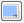
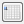
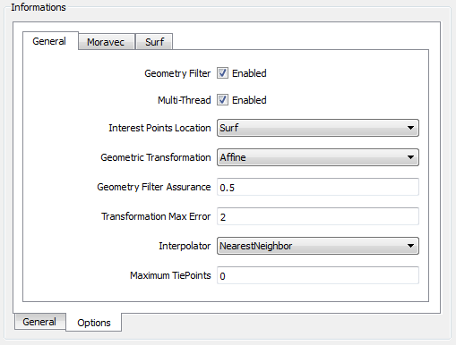
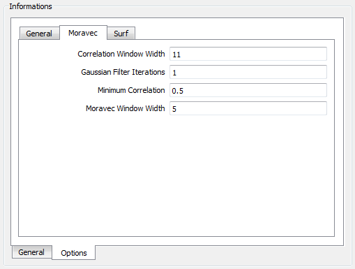
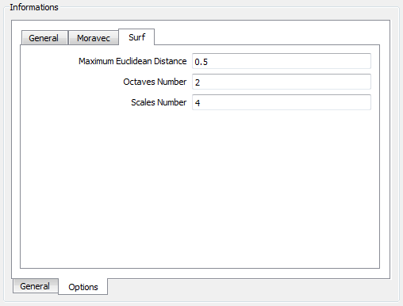
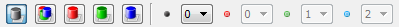
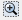
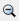
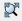
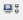

Register
Image
registration is a process of aligning two images acquired by
the same/different sensors, at different times or from different
viewpoint. Many image processing
applications like remote sensing for
change detection, estimation of wind speed and direction for weather
forecasting, fusion of medical images need image registration.
To
register
images, we need to determine geometric transformation that aligns
images with respect to the reference image. The most common
transformations used are:
The
parameters of the geometric transformation are calculated based on a
given set of tie-points.
The
tie-points can be obtained manually or automatically as follows:
- Manual method: in
this case the algorithm will generate the registered image based
on manually selected tie-points,
- Automatic method: in
this case the tie-points are automatically generated by other
algorithm comparing the input image with
another reference image. The generated tie-points are later used by the
register algorithm to generate the registered image.
It
is
accessible through:
Raster
Processing > Register...
This
wizard consists of the
following steps:
Wizard Page 1 - Selection
of the raster layer used as REFERENCE (Layer Search)
- On the List
of Layers select the raster layer to use as a reference.
Optionally use Filter By Name field
giving part of the layer name to help find the layer in the list.
- Press Next
to go to next step or Cancel to close the
dialog.
Wizard Page 2 - Selection
of the raster layer to be ADJUSTED (Layer Search)
- On the List
of Layers select the raster layer to be adjusted. Optionally
use Filter By Name field giving part of
the layer name to help find the layer in the list.
- Press Next
to go to next step or Cancel to close the
dialog.
Wizard Page 3 - The register interface
The registration interface is
composed of three components (Tie Points, Informations and
Reference/Adjust images) and several related tools. The
details of each component are described bellow:
- Tie Points
- this component is used to handle the
tie points and shows a group of tools used to add, update, select,
remove, and also for automatic acquisition. The tie points are
presented are the component Reference/Adjust images
area. To handle the tie points use the
tools described bellow:
- This tool is used to update the tie
points values if some of the geometric parameters at the
Informations component were changed.
 This
tool is used to add manually a tie point through
the keyboard, giving the X and Y coordinate for both images reference
and adjust.
This
tool is used to add manually a tie point through
the keyboard, giving the X and Y coordinate for both images reference
and adjust.- This
tool is used to select all tie points to execute
the registration.
- This
tool is used to unselect all tie points.
- This
tool is used to remove all selected tie points from
the list.
 This
tool is used to acquire automatically tie points
over the the images used as reference and adjust.
This
tool is used to acquire automatically tie points
over the the images used as reference and adjust. This
tool is used to finish the tie point acquisition
step and shows the next step of the registration method.
This
tool is used to finish the tie point acquisition
step and shows the next step of the registration method.
- Informations
- (General and Options tabs) - it is used to define geometric parameters and
also all options of specific parameters.
2.1 In
General Tab the
following information are required:
- Reference Band: Band
of
reference image to be used in register operation.
- Adjust Band: Band
of
adjust image to be used in register operation.
- Input: Reference
image metadata.
- SRID: Information about spatial
reference
system from image.
- Resolution X: horizontal resolution of the
image
pixels.
- Resolution Y: vertical resolution of the
image pixels.
- Output: Adjust
image metadata.
- SRID: Information about spatial
reference
system from image.
- Resolution X: horizontal resolution of the
image
pixels.
- Resolution Y: vertical resolution of the
image pixels.
- Tie points number:
Number
of acquired tie points.
- Transformation RMSE:
Calculates root mean square direct mapping error.
- All: For all tie
points
acquired.
- Selected: For
selected
tie points.
- Unselected: For
unselected tie points.
2.2 In Options
Tab it is possible to define
specific parameters for each type of geometric
transformation
available. See the General, Moravec and Surf tabs:
'
2.2.1
Options > General

2.2.2 Options
> Moravec
- Correlation Window Width:
used to correlate points between the
images (minimum 3, default: 11).
- Gaussian Filter Iterations:
the
number of noise Gaussian iterations, when applicable (used to remove
image noise, zero will disable the Gaussian Filter, default:1).
- Minimum Correlation:
the
minimum acceptable absolute correlation value when matching features
(when applicable), default:0.5, valid range: [0,1].
- Moravec Window Width:
the
Moravec window width is used to locate candidate tie-points (minimum 3,
default: 5 ).

2.2.3 Options
> Surf
- Maximum Euclidean Distance:
the
maximum acceptable euclidean
distance when matching features (when applicable),
default:0.5,
valid
range: [0,1].
- Octaves Number: the
number of
octaves to generate, when
applicable (default: 3, minimum:1).
- Scales Number: the
number of
sub-sampling scales to generate, when applicable (default:4, minimum:3).

-
Reference/Adjust
images area: this
component is used to show the tie points acquired in both images. There is one
group of tools available to handle image
composition. Using these tools it is possible to see the
images in monochromatic, color composition, in red, green or blue
channel. It is also possible to change the original color composition.

Also there is a group of tools (vertical) to handle zoom in, zoom out, pan,
recompose, manual collection of a tie
point over the images. To help collect
precise tie points there is a tool to display an
small area beside both images highlighting and zooming the region
around where the cursor is pointing to. For the details on how to use these tools see here.
Wizard Page 4 - Output
information
- Raster Info
- First press
 and inform the folder where the resulting
file will be saved.
and inform the folder where the resulting
file will be saved.
- Name - inform
the raster name.
- Extra
Parameters - if there are some, see the details on how to inform then here.
- Press Finish
to save the resulting registered raster or Back
to go to the previous wizard page.
Hint: Add the resulting raster to the TerraView project and
draw it together with the raster used as reference.